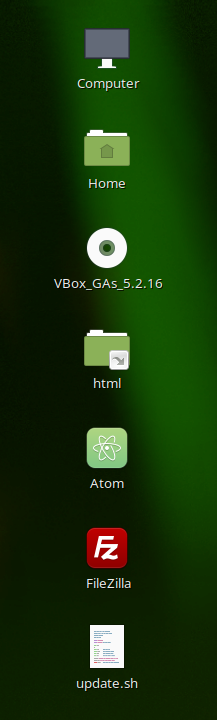

| This is how I went about creating my Virtual Machine, named MichaelC | |
| To create my Virtual Machine, all I had to do was clone a master copy that my teacher provided me | |
| Then I changed the passwords so that I could have security in my own machine, even if it's in a classroom environment | |
| Finally I added the programs necessary for my classes and added a symbolic link to the 'html' folder that I use for Apache2. |  |
| After all that, I stored my .ova file offsite (Google Drive) to create maximum security and allow me to be able to restore my machine if something goes wrong. |